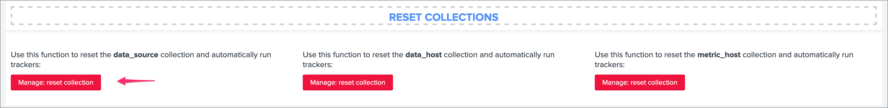
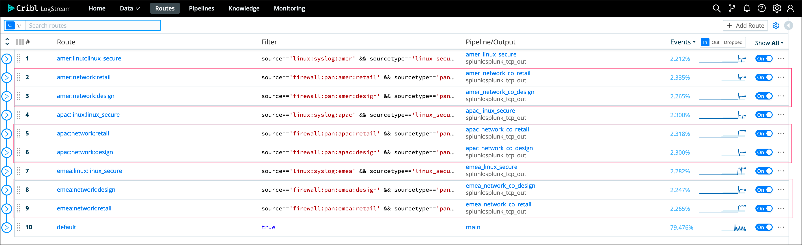
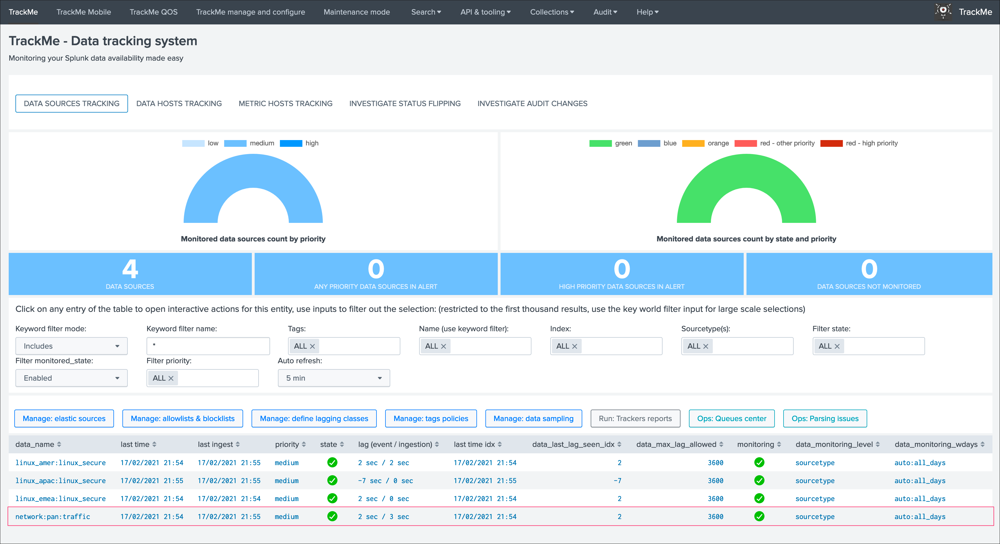
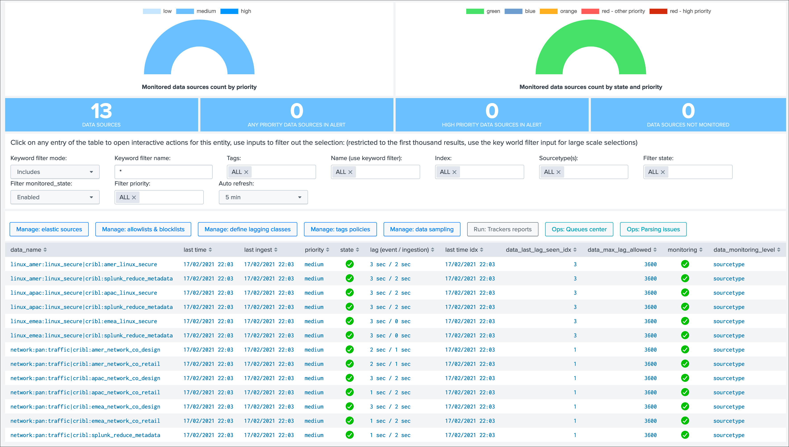
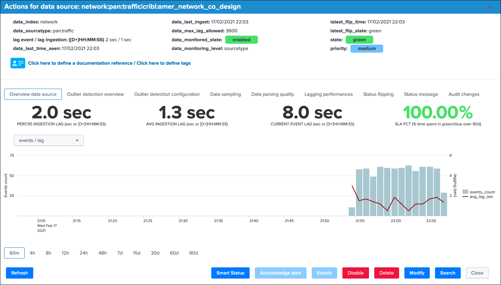
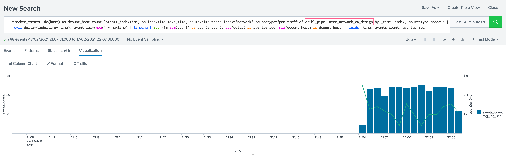
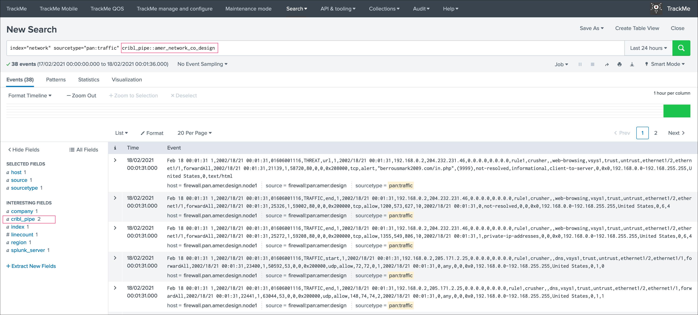
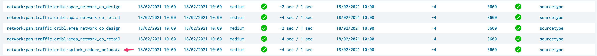

Cribl LogStream integration¶
{kind=link}
If you are using Cribl LogStream, you can easily integrate TrackMe in a just a few steps, using the excellent native Cribl LogStream design, TrackMe will take into account the concept of pipelines to create, monitor and render the data sources automatically.
In a nutshell:
A configuration parameter is available in TrackMe to enable the Cribl mode
Once activated, the Cribl mode updates the way TrackMe is identifying and breaking the data sources
To achieve this, TrackMe relies on the cribl_pipe indexed field automatically created by LogStream when data is indexed in Splunk
Related searches transparenly use the cribl_pipe information, that accurately represents the data pipeline as it should be monitored, from LogStream to Splunk
Enable the Cribl mode¶
To enable the Cribl mode, go in “TrackMe manage and configure” and click on the enable Cribl mode:
{kind=link}
Once the Cribl mode is enabled, perform a reset of the data source collection:
{kind=link}
Cribl mode data sources¶
Let’s assume the following simple scenario:
Cribl LogStream receives incoming data from any kind of sources, and streams to Splunk with associated pipelines
In our example, we instruct LogStream to index data in Splunk into a few indexes, but we have many more pipelines since we perform various operations on LogStream, indexes and sourcetypes are likely fed by much more than just one pipeline
In regular TrackMe mode, TrackMe would represent the data sources broken by indexes and sourcetypes, however, this does not represent what the incoming data flow is underneath, and does not provide the valuable information and monitoring layer we need
Once we enable the Cribl mode, TrackMe relies on the
cribl_pipepipeline information to properly distinguish the real data flow as it is from the data provider (Cribl LogStream) perspective
Cribl LogStream pipeline examples:
{kind=link}
In this example, the default TrackMe mode has different issues, we stream data to an index called “network”, however we have different pipelines that are potentially linked to multiple sources and from the LogStream point of view could be affected independently in case of an issue or misconfiguration:
{kind=link}
Once we enable the Cribl mode, we see a very different picture, TrackMe automatically creates data sources broken by index, sourcetype and cribl_pipe:
{kind=link}
Data sources are created as index + ":" + sourcetype + ":" + cribl_pipe, this represents the data flow from Cribl LogStream to Splunk.
Every search actioned by trackMe now automatically recycles the cribl_pipe information naturally, such as latency tracking, data sampling, open in search buttons, etc:
  {kind=link}
{kind=link}
{kind=link}
Cribl LogStream pre-processing pipelines and cribl_pipe field¶
If you have a proprocessing pipelines in your LogStream workflow, the cribl_pipe field becomes a multi-value indexed field that contains both the processing pipeline and pre-processing pipeline:
{kind=link}
{kind=link}
In the TrackMe context, this means that for the same data source, we get at least two entities, one per pipeline and one for the pre-processing pipeline:
{kind=link}
From the TrackMe point of view, the pre-processing pipeline view has no value and all that we care about is the data flow itself, to get rid of these entities automatically, we can add a data_name blocklist based in a very simple regular expression:
from the main TrackMe screen, go to “Manage: allowlists & blocklists”
add a new data_name blocklist according to the name of your pre-processing pipeline, in our case we will use
.*cribl:splunk_reduce_metadataonce it has been added, existing entities are not taken into account anymore, and if new data sources are discovered, these will exclude the pre-processing pipeline automatically
{kind=link}
{kind=link}
Congratulations!
You have a now a comprehensive integration between the wonderful and amazing Cribl LogStream and TrackMe allowing you to track your Splunk data the easy way!
Handling both Cribl mode and regular or additional custom modes¶
In some cases, you may have both Cribl Logstream feeding Splunk, and regular other types of data coming from Universal, Heavy Forwarders, HTTP event collector and so forth.
When TrackMe is configured in the Cribl mode, only data coming from Cribl Logstream will be taken into account, which happens because we expect a cribl_pipe indexed field for every data source to be discovered and maintained.
Hint
You can rely on Hybrid trackers to create any number of special trackers, and handle any additional use case as needed!
{kind=link}